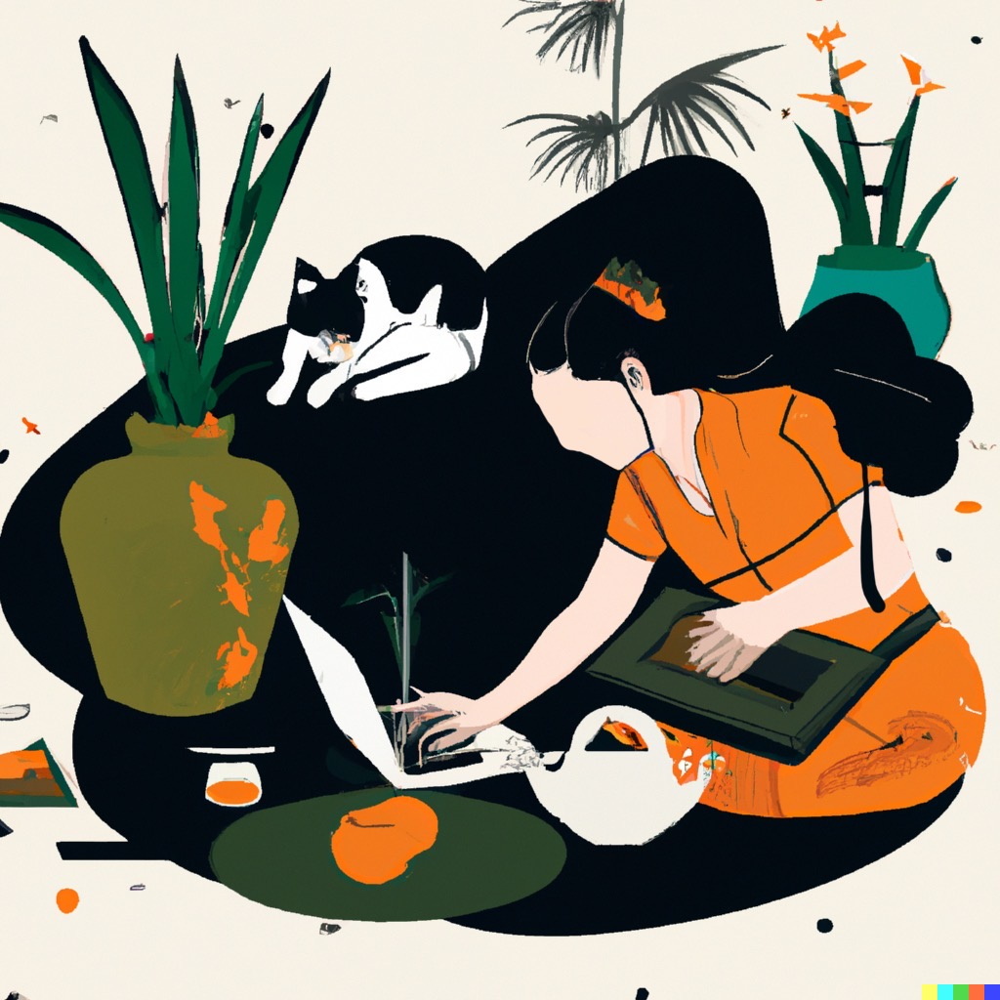

a bit more about cp000
(and this website)
hi! as mentioned before, i'm a student from california studying computer science (as well as cognitive neuroscience) at Brown University. aside from this, i like the calm and seemingly mundane: grocery shopping, helping my mother with cooking, listening to music (men i trust <3), and pottery.
(you might also suspect that i enjoy drawing, based on the various ukiyo-e style images scattered throughout the website. unfortunately, this is not one of the hobbies i had listed above. these images are ai generated by stable diffusion, which are much better than what i could possibly produce...)
so what is this portfolio about? i took a uiux course during my fall 2022 semester, to which i've worked on a multitude of projects (4 of which are showcased on the main page). i hope to relay my growth from the beginning of the semester, where i had limited frontend skills, to being able to create responsive and interactive websites.
i hope you enjoy experiencing my uiux progression with each project that you view.
